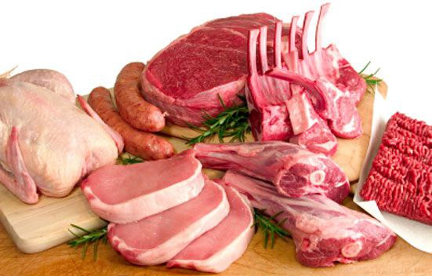
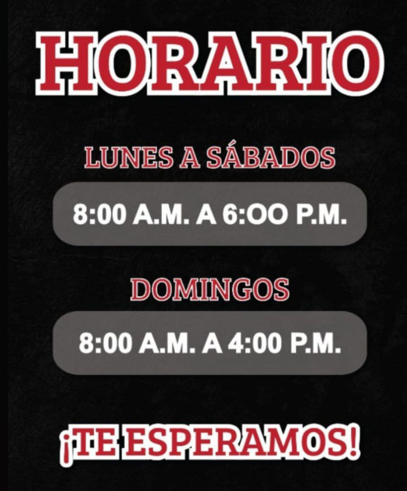

Quiénes somos?
Somos una carnicería con varios años en esta ciudad, siempre hemos preferido lo mejor para nuestros clientes y siempre tomamos en cuentas sus comentarios. Al pasar de los años hemos aquirido a los mejores trabajadores con una eficacia invaluable para este negocio, esperamos puedas contar con nosotros para tus próximos pedidos. ¿Qué esperas?
En nuestras dos sedes, contamos con todo tipos de cortes de carne que puedan existir y por supuesto tenemos nuestro espacio para los víveres del día a día.
A continuación podrás ver todos nuestros productos y nuestros números de contacto.

Tipos de cortes

En nuestra carnicería, existen diversos tipos de cortes que se realizan en la carne para adaptarla a las necesidades y preferencias para usted como consumidor. Estos cortes son fundamentales para aprovechar al máximo cada parte del animal y obtener piezas de carne de diferentes características y usos culinarios.
Nuestros cortes principales son:
Cortes de carne para asar: Estos cortes se caracterizan por su jugosidad y sabor intenso, ideales para cocinar a la parrilla o al horno. Incluyen el filete, el chuletón, el ribeye y la pierna de cordero.
Cortes para estofado: Son trozos de carne más económicos y con mayor cantidad de tejido conectivo, lo que los hace perfectos para guisos y estofados. Los populares son el osobuco, el jarrete y la paleta de cerdo.
Cortes para plancha o sartén: Estos cortes son más delgados y se cocinan rápidamente a altas temperaturas. Son ideales para preparar bifes, escalopas y bistecs, como el entrecot, el solomillo y el lomo de cerdo.
Nuestra Rutina
También ofrecemos una atención personalizada, solo escríbenos!
Nuestros combos para ti!